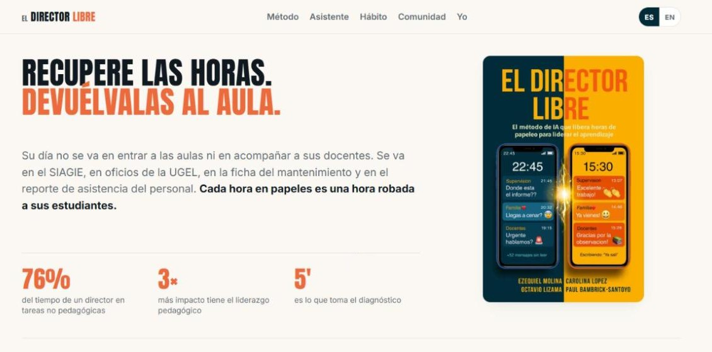
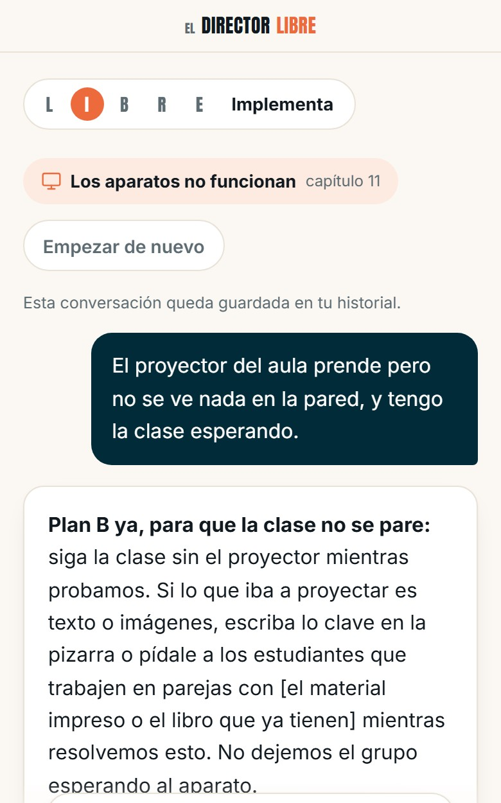

El Director LIBRE: el método de IA que libera horas de papeleo para liderar el aprendizaje.
Los directores de América Latina dedican la mayor parte de su tiempo a tareas administrativas y la menor parte a lo que más pesa en el aprendizaje de sus estudiantes: el liderazgo pedagógico. El libro propone un método de cinco pasos para usar la inteligencia artificial de forma ética y recuperar ese tiempo. Lo construimos con más de cien directores de ocho países, y trae los prompts listos para copiar y los casos paso a paso.
No es un camino fácil, pero es un camino con compañía.
En la comunidad de WhatsApp de El Director LIBRE, directores de toda la región comparten los prompts que les funcionan, los errores que cometieron para que otros no los repitan y las pequeñas victorias de cada semana.
Unirme a la comunidadTres formas de usar el método hoy mismo, sin pagar nada.
El GPT pide una cuenta gratuita de ChatGPT y NotebookLM una cuenta de Google. No escribas nombres de estudiantes ni de docentes en ninguna de ellas.
El GPT del Director LIBRE
Aplica el método LIBRE a tu caso, con la fórmula Tú, Quién, Qué y Cómo.
El libro, para hacerle preguntas
El libro completo cargado en NotebookLM: pregunta y te responde citando el capítulo.
Prompts listos para copiar
La biblioteca de prompts maestros, ordenada por tarea. Puedes sumar los tuyos.
Del libro a una plataforma, hecha con directores.
Estamos convirtiendo el método en una herramienta de trabajo. El director escribe lo que necesita, como se lo diría a su subdirector, y recibe un borrador que termina él: un aviso a las familias, una circular convertida en fechas, un plan B cuando el proyector no funciona. No recibe nombres de estudiantes ni de docentes, y no cita una norma que no tiene delante: si no la sabe, lo dice.
Buscamos 40 directores que la prueben primero. Pueden postular todos; elegimos 40 y les escribimos.


Lo cuentan ellos.
- El lanzamiento completoVideo en YouTube
- El Director LIBRE en EvidencIAEl método, la comunidad y las herramientas
- directorlibre@worldbank.orgPara preguntas sobre el libro o el piloto